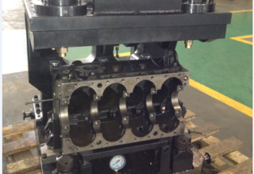

182026.06

Technical
Hydraulic vs Manual Fixtures: A 5-Dimension Analysis
Across efficiency, precision, intelligence, safety and stability — hydraulic fixtures clamp/release in just 2-3 seconds, with clamping deviation of only 1%-1.5% and support deviation as low as 0.5%-0.8%...